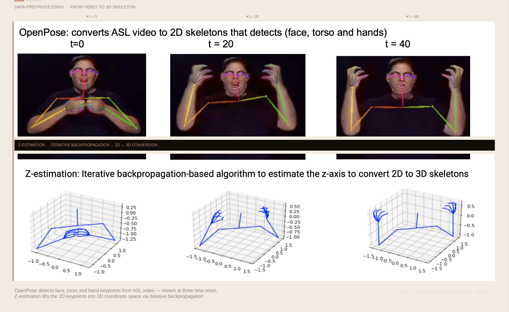

Blindness cuts us off from things, but deafness cuts us off from people. — Helen Keller, American deaf-blind educator
That quote sat on the first slide of our presentation. We put it there because it said in one sentence what we were trying to solve in an entire research project — and because it reminded us, every time we looked at it, exactly who we were building for.
It was 2020. A deep learning class at the University of Southern California. Four of us — a small team who shared the belief that the most interesting problems in AI weren't the ones everyone was already racing toward. We wanted to build something for people who were being left behind by the technology boom.
We chose Sign Language Production. Not recognition — that had been explored. Production. The reverse direction: taking a word in English and automatically generating the sign language for it. Word in. 3D skeleton out.
The Gap Nobody Had Filled
The research landscape had a strange asymmetry. Sign Language Recognition — teaching a computer to understand signing from video — had received real attention. Production, the reverse direction, was almost entirely unexplored at the end-to-end level.
What that means practically: technology could help hearing people understand someone who was deaf. But it couldn't bridge the gap the other way. A truly accessible system needs to go both directions. We decided to try building one.
Why It Was Hard
Sign language is not a simplified spoken language. It uses every part of the body simultaneously — upper body motion, hand shape and trajectory, and facial expressions. Miss any channel and the meaning changes or disappears entirely.
That multi-channel complexity is what makes it genuinely difficult for a neural network. You're not generating a sequence of words. You're generating a continuous stream of 3D skeletal poses — joint coordinates across the torso, arms, hands, and face — all moving together in a way a real human signer would recognise as correct.
No one had built a fully end-to-end system that could do this. We were building into a gap with no established baseline, no prior model to build on, and a lot of open questions about whether it was even solvable.
Word to Skeleton
The core idea: give the system a word — say, "thank you" — and it outputs a stream of 3D skeletal pose frames showing exactly how to sign it in ASL. Upper body, arms, hands, face — all encoded as 3D joint coordinates, frame by frame. String the frames together and you have a fluid, animated sign.
Turning Video Into Data
Before training anything, we had to turn raw sign language videos into something a neural network could learn from. We used the WLASL dataset — the largest Word-Level ASL video corpus available, covering 2,000 common words signed by multiple signers.
Preprocessing had two stages. First, OpenPose extracted 2D skeleton keypoints from every video frame — detecting face, torso, and hand positions as 2D coordinate data. Then a Z-estimation algorithm — an iterative backpropagation-based approach — estimated the depth axis, lifting those 2D skeletons into full 3D space.
That 3D conversion mattered enormously. A flat 2D skeleton loses depth information that changes the meaning of a sign. Getting the z-axis right was one of the most technically demanding parts of the entire project.

The Architecture — Two Components
We built a GAN-based system: a Generator and a Conditional Adversarial Discriminator working in tension with each other.
The Generator used a Progressive Transformer — an encoder-decoder architecture with Counter Embedding and Continuous Embedding layers — to produce sign pose sequences frame by frame. The Counter Embedding tracked position progressively; the Continuous Embedding conditioned each new frame on the previous pose.
The Discriminator was conditioned on the input word — meaning it judged not just whether a pose sequence looked realistic, but whether it was the correct sign for that specific word. The training signal combined MSE loss from the Generator with adversarial loss from the Discriminator.
Three Experiments
We ran three experiments to understand what was actually contributing to performance. The first used the Progressive Transformer alone — no adversarial component, just the sequence generator trained with MSE loss. The second added the conditional GAN discriminator. The third added noise injection during training to improve robustness.
Comparing all three gave us real insight. The GAN component made the most meaningful difference to output quality. The noise experiment pushed the metrics further, giving us our best results.
The Numbers
We evaluated using BLEU-1 — borrowed from machine translation, measuring how closely generated sequences match ground truth — and Dynamic Time Warping (DTW), measuring geometric similarity between generated and real pose sequences across time.
Our best configuration achieved BLEU-1 of 31.4 and DTW of 78.69. Strong results for a problem with no prior baseline — because no one had solved it before. More importantly, we had proved the problem was solvable at all. The door was open.
We weren't just training a model. We were asking a neural network to learn the grammar of a language spoken entirely through the body.
The Work That Came After
Our model was preliminary — we were honest about that in the presentation. We had proved the concept and established a first baseline for a problem nobody had solved. But the research didn't stop when the class ended.
My teammates carried it forward. They extended the architecture, improved the training pipeline, and pushed the work further than we'd taken it together in the class. That's how good research works — one team opens the door, the next team walks further through it. I'm glad we were the ones who found it first.
Why This Kind of Work Matters
There are roughly 70 million deaf people in the world. Most navigate a world built almost entirely for people who hear. The technology industry has poured extraordinary resources into problems already well-served — and comparatively little into problems that affect people without economic power to demand attention.
Building this project changed how I think about what engineering is for. The memory of building something for people who genuinely needed it — not just wanted a faster checkout — stays with me in a different way than any other work I've done.
This project was built by four graduate students at USC as part of our deep learning coursework — every architectural decision, every training run, every late-night debugging session was shared. My teammates continued extending this research beyond the class project. The work, and the credit, belongs to all of us.
What It Left Behind
Helen Keller's words have stayed with me since I first put them on that slide. Deafness is invisible to most of us. We don't notice the barrier because we've never needed to cross it.
I build right, for the right reasons, every time. That principle didn't come from nowhere. It came from a USC classroom, a team of four, and a quote about deafness cutting people off from each other — and the conviction that it didn't have to.
The 3D Sign Language Production model was built 2020–21 at USC. Research extended by teammates post-course. WLASL dataset courtesy of the USC Information Sciences Institute. Architecture based on Progressive Transformers for Sign Language Production (Saunders et al.).
A Note on Accessibility in AI
AI has the power to lower barriers that most people don't even know exist — but only if the people building it choose to look. The most important software we can build is software that lets more people participate in the world.
I'm not suggesting every engineer has to pivot to accessibility research. But I do think we should be honest about where our attention goes and why. The hardest problems are not always the most visible ones. And sometimes the most meaningful thing you can build is the thing nobody else thought to build first.
The most important software we can build is software that lets more people participate in the world.